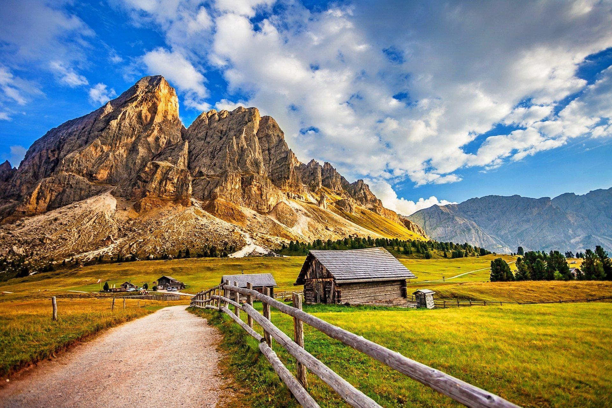
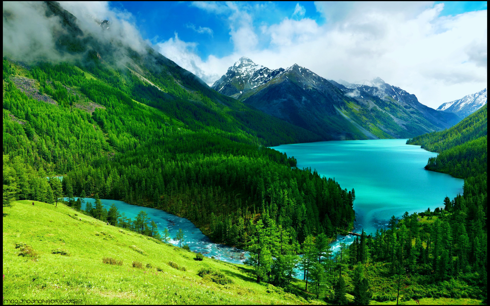

Here we have a few facts about Mountains, also a few activities that you can do at a National Park or better yet while visiting your favorite Mountain.

Hiking
Did you know that there are about 24 different types of hiking trails across the world? Here are the names of all of them.
- Access trail
- Backcountry trail
- Bridlepath(UK)
- Feeder trail
- Extended trail
- Directional use trail

Mountain Fishing
- Clear, cold water of the White Mountains region is ideal for trout fishing.
- Colorado has some of the best fly fishing in the United States. Fall is a prime time to come catch some hungry trout that are beefing up for the winter season. In addition to making large catches, the views really cannot get better as you fish surrounded by golden mountains with fall foliage.

Mountain Biking
- The biggest adrenaline addict a rush, while road cycling may offer a more peaceful and calming experience. Travel with your bike.
- Unlike regular cycling, which typically takes place on paved roads or smoother surfaces, mountain biking allows you to explore the great outdoors and experience the thrill of navigating through rugged and uneven landscapes.